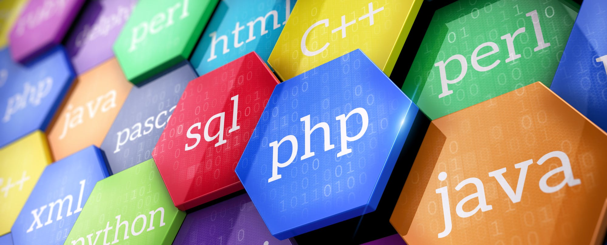
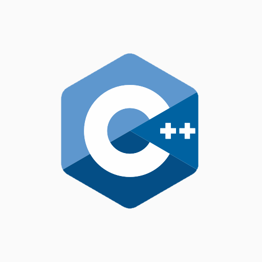
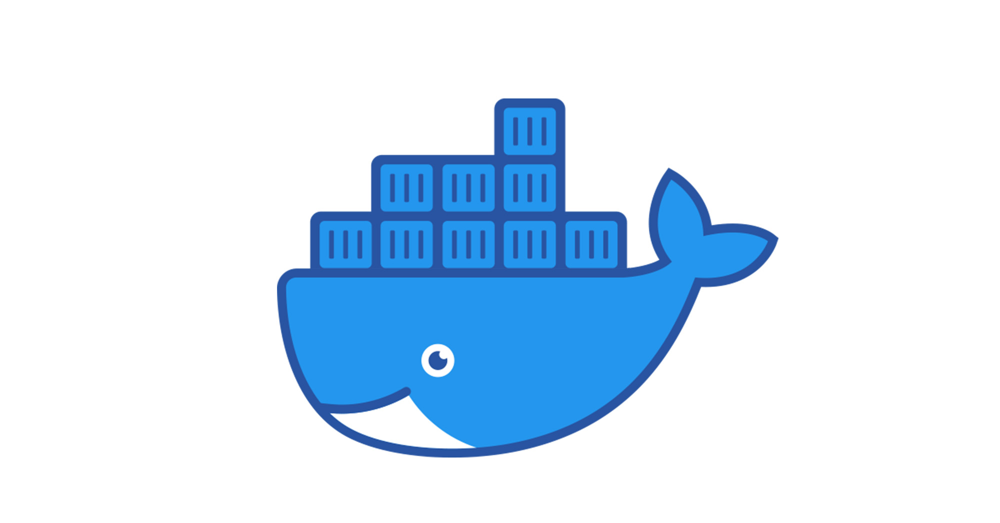
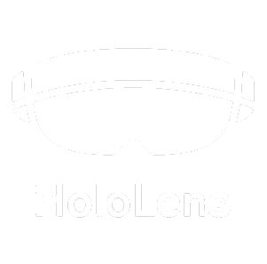
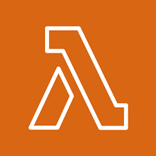
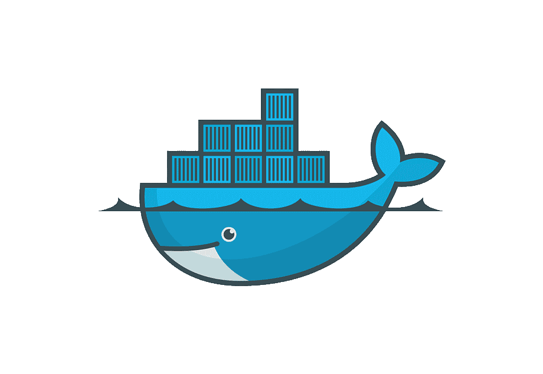
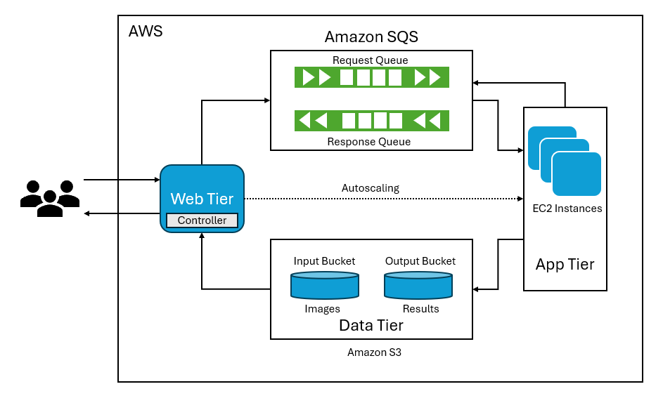

Hi, I'm Ian
A computer science graduate student at ASU
A computer science graduate student at ASU

Hello, I'm thrilled you've decided to check out my portfolio. I'm Ian, a top-performing computer science graduate student at ASU and previous intern with Iridium Satellite Communications, finishing up my Master's this December 2024.
My passion for problem solving and innovation has driven my success, enabling me to lead development of a REST API Gateway during my internship. My growing curiosity in technology has led me to diverse projects, including creating complex cloud systems, developing full-stack applications, and programming complex algorithms. Each project presents a unique opportunity to enhance my technical knowledge and leave my footprint in an evolving technical landscape.
Connect with me! We can discuss opportunities and ideas for collaboration.

C++, creating complex algorithms utilizing Visual Studios and GDB
App development, utilizing Swift, Storyboard, and MVC architecture
Python, writing algorithms, machine learning, and automation scripts
Java, foundational OOP and Rest APIs in Spring Boot knowledge
AWS, designing applications on Lambda, EC2, S3, and Flask on Python

Docker, creating docker containers and deploying docker images on AWS
Linux, writing shell script files and performing essential tasks

Git, maintaining source control and constructing CI/CD pipelines

I had the opportunity to work with Iridium's B/OSS team as an intern from May 2023 until February 2024. During this time, I applied and expanded many of the skills I've learned at school. The team followed agile methodologies, meeting up daily for standup, splitting work into biweekly sprints, retrospectives, and JIRA to coordinate the efforts. This experience allowed me to grow my professional network, connect with inspirational people, and gain a deeper understanding of how an engineering environment operates.
My responsibilities included:Since fall 2020, I've been honing my technical skills at ASU, having gone from someone with a simple interest in technology to nearing completion of my Master's degree this December 2024. I'm confident ASU's computer science curriculum has provided me the technical skills to transition from being a student to a well-versed software developer.
So far I have achieved:
Nashorstats is an application which displays information about esports teams and performs in depth analytics on which objectives impact the game's outcome the most. Nashorstats started out as an idea to determine which statistics are correlated the most with winning the game, but as time went on we became ambitious and implemented an account system, admin database access, and a pretty GUI.
We utilized a technology framework called the PERN (Postgres, Express, React, Node.js) stack, which allowed us to make calls directly to a PostgreSQL database directly from our website. These requests were handled by the Node.js backend, and the received responses would be reflected immediately by the react based interface. This project was incredibly rewarding, enhanced my knowledge on web services, database management, react, and working on large scale applications.


The construction simulator provides a realistic scenario for users to work their way through on a Microsoft Hololens 2, where the user can interact with a 3D environment around them, use voice recognition to make actions, and see visuals and sounds to reflect the success or failure of their decision. All of the user's actions are collected as data so professors and researchers can evaluate their performance. I was responsible for building the backend of the application, ensuring the logic functioned properly, tracking user data, and conducting extensive testing.
As a team, we utilized JIRA to create a project timeline, track sprint velocity, and meet up weekly to discuss how to efficiently progress the project. At the end of the project, I had the pleasure to present this with my team at ASU's Fall 2023 Capstone Fair, where we bought a Hololens for visitors to try our application.
My family and I have a lot of photos, and to be honest, looking through my phone to find my favorite photos takes a very long time. I needed a way to sort through them, but rather than using my phone's built in functions, I thought I should develop my own album app.
This is a full-stack application, developed using javascript and react as the frontend and node.js as a backend. Node.js can obtain necessary information about the photos stored locally on my computer. Once it has all the info, it uses javascript to write the html code, making it for me to update the album in the future. In addition, the application has a favorites feature, making it very easy for me to find my favorite photos in the future.


I constructed an advanced AWS system (as denoted by the figure) which performs image classification based on an image sent to the web tier. These requests are processed by a convolution neural network (CNN) model in an app tier. These app theirs are created by my own implementation of auto scaling based on demand. All results are also output to an S3 bucket for safe keeping and logging reasons.
In addition, I programmed a similar application using AWS Lambda instead of S3, where it would instead take a request containing an MP4 file, utilize FFmpeg to split the video into frames, and then conduct image classification based on the frames extracted. To deploy this application, I had to construct a dockerfile to create a docker image which installs FFmpeg so the service could properly split the video.
The CNN model was developed with PyTorch, utilizing proper train testing data, thurougly evaluated, and fine tuned using G-score calculations.
